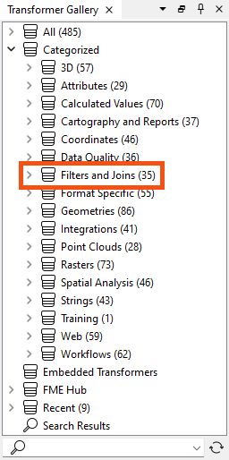
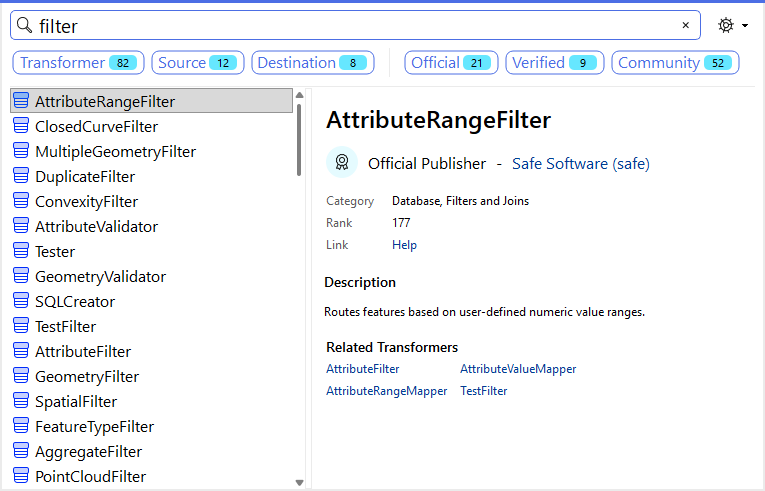
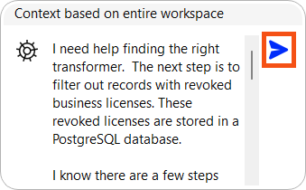
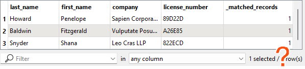
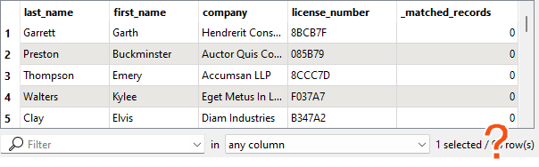
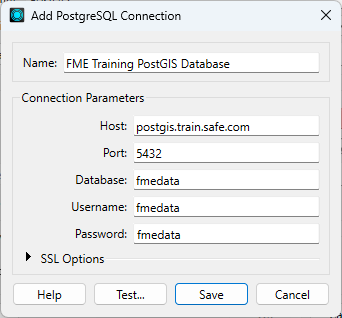

After completing this lesson, you’ll be able to:
In this lesson, you will:
Resources
When Jennifer first began using FME, she found the list of almost 500 transformers daunting. One of the most common challenges new FME users face is finding the correct transformer for a given task. However, Jennifer learned that most users only focus on the subset of transformers relevant to their day-to-day workflow. Since Jennifer doesn’t plan to work with raster data, she doesn't need to know a whole category of raster-dedicated transformers. She knows she doesn’t need to be familiar with every transformer to use FME effectively.
As she learned FME, Jennifer found the following resources helpful in learning about transformers:
| Resource | Why use it? |
| Searching using Quick Add in FME Workbench | You can quickly search transformers, see the Help, and add to the canvas to try them out. |
| AI Assist | Tailored advice based on your workspace. |
| Browsing or searching using the Transformer Gallery in FME Workbench | Filter transformers by category and search directly in Workbench. |
| Using the FME Transformer Reference Guide | Contains snippets from Help to explain transformer use cases. |
| Community Forums | Post on the Forums for help from other FME users. This method is particularly useful if your scenario is more advanced or complex. |
The Scenario
Jennifer continues to work on her workspace. The next step is to filter out records with revoked business licenses. These revoked licenses are stored in a PostgreSQL database.
Jennifer knows there are a few steps that need to happen to accomplish her goal:
She also knows two things:
Jennifer decides to start by looking in the Workbench Transformer Gallery categories. She sees the Filters and Joins category:

She could look through the transformers here individually and read their Help pages to learn more, but she thinks that might take too long.
Second, she tries searching for some keywords in Quick Add. She opens her workspace and starts typing keywords. First, she tries “filter and join,” but this search is too specific and doesn’t yield any attribute-related results.
She tries some more keywords in both search modes: “filter,” “merge,” and “join.” These return some promising transformers.

She scans the attribute transformers and their descriptions. She's still not sure which one to use.
She finally decides to ask AI Assist. She clicks the AI Assist button in the top right of the toolbar.
She describes her scenario in the input text box. She ensures nothing is selected, which means FME passes "Context based on the entire workspace" to the AI to help it understand the scenario.
She clicks the Send button or presses the Enter key to send the message.

AI Assist thinks for a while and then answers. This method produces a promising result...
Jennifer adds the mystery transformer via Quick Add. She connects it to her workflow, sets the parameters, and finds it does just what she wants.
You’ve read about Jennifer’s search for her transformer. Now you have to find it!
Using the techniques above and the starting workspace (in FME Workbench 2026.1 or later), find a transformer that will accomplish her goals:
Here are some clues:
Once you find the transformer, connect it between the AttributeManager and the BusinessOwners writer feature type and configure it. You can use Data Preview with data caching to confirm the correct results. Your output will have two streams of features.
Features with a revoked_license:

Features without one:

Ensure you connect the correct stream of features to the writer feature type. Remember, we want to filter out features with revoked licenses and not write them out.
You can view the solution by downloading the complete workspace or reading the next lesson.
Database Connection Details
Database connections save authentication information for databases. FME also has web connections to connect to web services and APIs. They are stored on the user’s operating system profile or network drives to store authentication information separately from the workspace. They can also be published to FME Flow so users can share them without exposing passwords.
From here, you must fill in the database connection details, shown below.
If you are taking a Safe Software-hosted training course, choose the existing database connection from the drop-down (FME Training PostGIS Database) instead of creating a new one.

She clicks Test and then Save. FME tests the connection and confirms that it is working.
The table you need to connect to is public.revoked_licenses.
If you have problems connecting to the database, you can use this backup CSV file: revoked_licenses.csv (C:\FMEData\Resources\IntegrateDataWithTheFMEPlatform\revoked_licenses.csv).